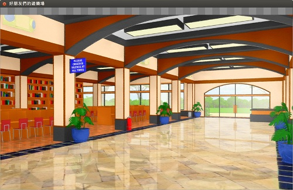

<!DOCTYPE html PUBLIC "-//W3C//DTD XHTML 1.0 Transitional//EN" "http://www.w3.org/TR/xhtml1/DTD/xhtml1-transitional.dtd">
<html xmlns="http://www.w3.org/1999/xhtml" xml:lang="en-gb" lang="en-gb" >
<head>
<script src="https://ajax.googleapis.com/ajax/libs/jquery/1.11.1/jquery.min.js"></script>
<link rel="shortcut icon" href="../../images/favicon.ico" />
	  <meta http-equiv="content-type" content="text/html; charset=utf-8" />
  <meta name="robots" content="index, follow" />
  <meta name="keywords" content="OSSFNL823" />
  <meta name="title" content="《雪凡與好朋友們的 Ren'Py 遊戲引擎初學心得提示》第七回：粒子之下，色彩之上" />
  <meta name="description" content="又到了眾所期待的 Ren'Py 節目時間。大家好，我是節目主持人雪凡。 「我是絲蔻兒。」 「我是音符呀。」 啊哈，兩位熟悉的搭檔再次登場，在下可是無任歡迎的呢。 不過，本回的內容......也算是上回的擴展與補充。程式碼可是有相當份量的說。看到程式碼就該咚咚登場的泰克斯 (text)，人又到哪去了？ 「那傢伙狀況挺糟的，壓根就沒出門啊。」" />
  <meta name="generator" content="" />
  <title>《雪凡與好朋友們的 Ren'Py 遊戲引擎初學心得提示》第七回：粒子之下，色彩之上 - OpenFoundry</title>
  <link href="../../favicon.ico" rel="shortcut icon" type="image/x-icon" />
  <link rel="stylesheet" href="../../components/com_jcomments/tpl/default/style.css%3Fv=10.css" type="text/css" />
  <link rel="stylesheet" href="../../components/com_gantry/css/gantry.css" type="text/css" />
  <link rel="stylesheet" href="../../components/com_gantry/css/grid-12.css" type="text/css" />
  <link rel="stylesheet" href="../../components/com_gantry/css/joomla.css" type="text/css" />
  <link rel="stylesheet" href="../../templates/rt_quantive_j15/css/joomla.css" type="text/css" />
  <link rel="stylesheet" href="../../templates/rt_quantive_j15/css/style1.css" type="text/css" />
  <link rel="stylesheet" href="../../templates/rt_quantive_j15/css/light-body.css" type="text/css" />
  <link rel="stylesheet" href="../../templates/rt_quantive_j15/css/demo-styles.css" type="text/css" />
  <link rel="stylesheet" href="../../templates/rt_quantive_j15/css/template.css" type="text/css" />
  <link rel="stylesheet" href="../../templates/rt_quantive_j15/css/typography.css" type="text/css" />
  <link rel="stylesheet" href="../../templates/rt_quantive_j15/css/fusionmenu.css" type="text/css" />
  <style type="text/css">
    <!--
#rt-main-surround ul.menu li.active > a, #rt-main-surround ul.menu li.active > .separator, #rt-main-surround ul.menu li.active > .item, #rt-main-surround .square4 ul.menu li:hover > a, #rt-main-surround .square4 ul.menu li:hover > .item, #rt-main-surround .square4 ul.menu li:hover > .separator, .roktabs-links ul li.active span {color:#0088B5;}
a, #rt-main-surround ul.menu a:hover, #rt-main-surround ul.menu .separator:hover, #rt-main-surround ul.menu .item:hover {color:#0088B5;}
    -->
  </style>
  <script type="text/javascript" src="../../components/com_jcomments/js/jcomments-v2.1.js%3Fv=2"></script>
  <script type="text/javascript" src="../../components/com_jcomments/libraries/joomlatune/ajax.js"></script>
  <script type="text/javascript" src="../../media/system/js/mootools.js"></script>
  <script type="text/javascript" src="../../media/system/js/caption.js"></script>
  <script type="text/javascript" src="../../components/com_gantry/js/gantry-buildspans.js"></script>
  <script type="text/javascript" src="../../components/com_gantry/js/gantry-inputs.js"></script>
  <script type="text/javascript" src="../../templates/rt_quantive_j15/js/jquery.cookie.js"></script>
  <script type="text/javascript" src="../../modules/mod_roknavmenu/themes/fusion/js/fusion.js"></script>
  <script type="text/javascript" src="../../modules/mod_ofssologin/js/ofssologin.js"></script>
  <script type="text/javascript">

			window.addEvent('domready', function() {
				var modules = ['rt-block'];
				var header = ['h3','h2','h1'];
				GantryBuildSpans(modules, header);
			});
		
InputsExclusion.push('.content_vote','#rt-popup')
		        window.addEvent('load', function() {
					new Fusion('ul.menutop', {
						pill: 0,
						effect: 'slide and fade',
						opacity: 1,
						hideDelay: 500,
						centered: 0,
						tweakInitial: {'x': -2, 'y': 0},
        				tweakSubsequent: {'x': 0, 'y': -14},
						menuFx: {duration: 200, transition: Fx.Transitions.Sine.easeOut},
						pillFx: {duration: 400, transition: Fx.Transitions.Back.easeOut}
					});
	            });
  </script>
<!-- <script type="text/javascript" src="/sso/javascripts/langsync.js"></script> -->
<!-- <script src="/templates/rt_quantive_j15/js/ossf.js"></script> -->
<script type="text/javascript">

  var _gaq = _gaq || [];
  _gaq.push(['_setAccount', 'UA-4136519-1']);
  _gaq.push(['_trackPageview']);

  (function() {
    var ga = document.createElement('script'); ga.type = 'text/javascript'; ga.async = true;
    ga.src = ('https:' == document.location.protocol ? 'https://ssl' : 'http://www') + '.google-analytics.com/ga.js';
    var s = document.getElementsByTagName('script')[0]; s.parentNode.insertBefore(ga, s);
  })();

</script>
</head>
	<body  class="backgroundlevel-low backgroundstyle-style8 bodylevel-med bodystyle-light cssstyle-style1 logostyle-dark font-family-helvetica font-size-is-default menu-type-fusionmenu col12 ">
		<div id="rt-main-background">
			<div class="rt-container">
																<div id="rt-header">
					<div class="rt-grid-7 rt-alpha">
    			<div class="rt-block">
    	    	<a href="../../index.html" id="rt-logo"></a>
    		</div>
	    
</div>
<div class="rt-grid-5 rt-omega">
                    <div class="square9">
                    <div class="rt-block">
				<div class="rt-module-surround">
					<div class="rt-module-top"><div class="rt-module-top2"><div class="rt-module-top3"></div></div></div>
					<div class="rt-module-inner">
	                							<div class="module-content">
		                	<div class="ofssologin_square9"><a href="../../index.html">Login</a>&nbsp;&nbsp|&nbsp;&nbsp;<span><a href="../../tw/foss-programs/8919--renpy-.html" ><span lang="tw" xml:lang="tw">繁體中文</span></a></li></ul></span><!--Joom!fish V2.0.4 (Lightning)-->
<!-- &copy; 2003-2009 Think Network, released under the GPL. -->
<!-- More information: at http://www.joomfish.net -->
<div class="ofssologin_search_square9">
  <form id="of_search" action="https://www.openfoundry.org/of/openfoundry/search" method="get" onsubmit="of_search(); return false;">
    <select id="of_search_type">
      <option value="Projects"> Projects </option>
      <option value="Content"> Content </option>
      <option value="People"> People </option>
    </select>
    <input id="query" name="query" id="mod_search_searchword" maxlength="50" alt="search" class="inputbox" type="text" size="28" value="search..."  onblur="if(this.value=='') this.value='search...';" onfocus="if(this.value=='search...') this.value='';" />
    <input type="hidden" name="commit" value="search" />
  </form>
</div></div>						</div>
					</div>
					<div class="rt-module-bottom"><div class="rt-module-bottom2"><div class="rt-module-bottom3"></div></div></div>
				</div>
            </div>
                </div>
		
</div>
					<div class="clear"></div>
				</div>
																<div id="rt-navigation"><div id="rt-navigation2"><div id="rt-navigation3">
					
<div class="nopill">
	<ul class="menutop level1 " >
						<li class="item1 root" >
					<a class="orphan item bullet" href="../../index.html"  >
				<span>
			    				Home				   
				</span>
			</a>
			
			
	</li>	
							<li class="item32 root" >
					<a class="orphan item bullet" href="../../archived.html"  >
				<span>
			    				Projects				   
				</span>
			</a>
			
			
	</li>	
							<li class="item186 root" >
					<a class="orphan item bullet" href="../community.html"  >
				<span>
			    				Who&#039;s Who				   
				</span>
			</a>
			
			
	</li>	
							<li class="item4 root" >
					<a class="orphan item bullet" href="../news.html"  >
				<span>
			    				News				   
				</span>
			</a>
			
			
	</li>	
							<li class="item5 root" >
					<a class="orphan item bullet" href="../law-and-licensing.html"  >
				<span>
			    				Law &amp; Licensing				   
				</span>
			</a>
			
			
	</li>	
							<li class="item3 root" >
					<a class="orphan item bullet" href="../activities.html"  >
				<span>
			    				Activities				   
				</span>
			</a>
			
			
	</li>	
							<li class="item2 root" >
					<a class="orphan item bullet" href="../resourcecatalog.html"  >
				<span>
			    				Resource Catalog				   
				</span>
			</a>
			
			
	</li>	
							<li class="item45 root" >
					<a class="orphan item bullet" href="../about.html"  >
				<span>
			    				About				   
				</span>
			</a>
			
			
	</li>	
				</ul>
</div>

				    <div class="clear"></div>
				</div></div></div>
								<div class="rt-surround"><div class="rt-surround2"><div class="rt-surround3">
										<div id="rt-showcase-section">
												<div id="rt-showcase">
							<div class="rt-grid-12 rt-alpha rt-omega">
    		<div class="clear"></div>
		
		
                <div class="close-note">
                    <div class="rt-block">
               					<div class="module-content">
                	<div style="font-size:medium; background-image:linear-gradient(120deg,#159957,#4298b2);color:white;padding:20px;margin:-10px -18px;">感謝您對「自由軟體鑄造場」的支持與愛護，十多年來「自由軟體鑄造場」受中央研究院支持，並在資訊科學研究所以及資訊科技創新研究中心執行，現已完成階段性的任務。 <a style="color: #45d1ff;" href="https://www.openfoundry.org/">原網站</a>預計持續維運至 2021年底，網站內容基本上不會再更動。本網站由 <a style="color: #45d1ff;" href="https://denny.one/">Denny Huang</a> 備份封存。<br />也紀念我們永遠的朋友 李士傑先生（Shih-Chieh Ilya Li）。</div>				</div>
            </div>
                </div>
		
</div>
							<div class="clear"></div>
						</div>
																	</div>
															<div id="rt-main-surround">
												<div id="rt-breadcrumbs">
								<div class="rt-breadcrumb-surround">
		<a href="../../index.html" id="breadcrumbs-home"></a>
		<span class="breadcrumbs pathway">
<a href="../foss-programs.html" class="pathway">FOSS Programs</a>  <span class="no-link">《雪凡與好朋友們的 Ren'Py 遊戲引擎初學心得提示》第七回：粒子之下，色彩之上</span></span>
	</div>
	
							<div class="clear"></div>
						</div>
																							              <div id="rt-main" class="sa3-mb9">
                <div class="rt-main-inner">
                    <div class="rt-grid-9 rt-push-3">
                                                <div class="rt-block">
                            							<div class="square1">
							<div class="rt-module-surround">
								<div class="rt-module-top"><div class="rt-module-top2"><div class="rt-module-top3"></div></div></div>
								<div class="rt-module-inner">
		                            <div id="rt-mainbody">
		                                
<div class="rt-joomla ">
	<div class="rt-article">
		
				<div class="rt-headline"><h1 class="rt-article-title">《雪凡與好朋友們的 Ren'Py 遊戲引擎初學心得提示》第七回：粒子之下，色彩之上</h1>		</div>
		<div class="clear"></div>
		
		
		
				<div class="rt-articleinfo">
						<div class="rt-article-icons">
								<a href="8919--renpy-%3Ftmpl=component&amp;print=1&amp;layout=default&amp;page=.html" title="Print" onclick="window.open(this.href,'win2','status=no,toolbar=no,scrollbars=yes,titlebar=no,menubar=no,resizable=yes,width=640,height=480,directories=no,location=no'); return false;" rel="nofollow"><span class="icon print"></span></a>																</div>
			
			<span class="rt-date-posted">
						 Created at			Thursday, 07 March 2013 00:00						&nbsp;&nbsp;&nbsp;&nbsp;						Last Updated on Wednesday, 15 May 2013 11:11						</span>

						<span class="rt-author">
				Written by 林雪凡			</span>
				
					</div>
		
		
		<p>又到了眾所期待的 Ren'Py 節目時間。大家好，我是節目主持人雪凡。</p>
<p>「我是絲蔻兒。」</p>
<p>「我是音符呀。」</p>
<p>啊哈，兩位熟悉的搭檔再次登場，在下可是無任歡迎的呢。</p>
<p>不過，本回的內容......也算是上回的擴展與補充。程式碼可是有相當份量的說。看到程式碼就該咚咚登場的泰克斯 (text)，人又到哪去了？</p>


<p>「那傢伙狀況挺糟的，壓根就沒出門啊。」</p>
<p>「呀......那、那個......小泰他，好像是在煩惱些什麼......我們有點不好叫他......」</p>
<p>哈啊？</p>
<p>「嘛啊～也不知怎麼搞的...... 自從上次上完節目，就看他一臉失魂落魄的樣子，嘴裏總在喃喃自語：『我絕對不可能和絲蔻兒越來越像』什麼的......完全不知道在想什麼呢！」</p>
<p>「我不可能和絲蔻兒越來越像，我不可能和絲蔻兒越來越像......」</p>
<p>「大、大概就像這樣......」</p>
<p>......</p>
<p>呃，好，咱大概懂了，這真是一椿悲哀的意外。不過這個話題和我無關，完全無關，就此跳過吧。</p>
<br />
<p>今天要帶給大家的主題有兩大項。</p>
<p>首先擋在面前的是「粒子系統」。在這個主題中，咱們會聊到如何使用大量的小圖片來創造動畫。至於第二個，則是動態的圖片修改器 "Image Manipulators"。</p>
<p>前者能讓您大量創造像是「雨水落下」一類的畫面效果。至於後者，則能讓遊戲無需預存圖片的全部版本－－只需保存少少幾張圖，與之相關的衍生版本（如一張背景圖可能有多種打光變化）就能透過即時算圖自動搞定－－這不光是節約儲存空間，也可減少您需要管理的圖片總量，是相當方便的功能。</p>
<br />
<p>「雖然程式碼確實不少，但本回的內容遠遠沒有上回那麼繁瑣。請不要被上回嚇倒倒了。」</p>
<p>「那麼，這就開始吧！」</p>
<p>走囉！</p>
<br />
<h3>Sprite 粒子系統</h3>
<p>照慣例，最難的東西放在最前面－－今天就從粒子系統開始。</p>
<br />
<p>要讓畫面上出現一大堆，具有隨機動畫的相似小圖片（比方說水花、雨點、雪片、花瓣等等），一張張貼圖、手工寫 ATL 做動畫這種事，多半不是個好主意。畢竟結局我已經見到了：「少女（年）伏在桌上，臉上帶著一絲笑容，彷彿睡著了那般，靜靜地陷入了永眠」－－世界線變動率 怎樣也無法超過一啊！</p>
<p>一言以蔽之，會累死的。</p>
<p>雖然說過勞死也是遊戲製作者的本職學能，不過如此一來，會給社會版記者造成很大的困擾，還請不要那麼做。</p>
<br />
<p>為了減少社會版記者......不對，應該說各位遊戲作者的麻煩，Ren'Py 提供了相當不錯用的 Sprite 系統。</p>
<p>如前所述，Sprite 系統能在畫面上隨機顯示很多小圖片，並附上相應的移動特效......像雪花或櫻花紛紛飄落這種效果，用本系統就能輕易做到。</p>
<br />
<p></p>
<p>▲ 圖：官網對粒子效果的示範之一－－讓多片櫻花瓣從邊緣的隨機位置，以隨機的速度與方向飄落。以上這種簡單的粒子效果，用 SnowBlossom() 函式就能創造出來；稍後會有示範的，請別著急。另一方面，圖上標出的 Sprite 就是 Ren'Py 粒子系統中的「粒子」了。</p>
<br />
<p><span class="inset-left yellowbox" style="width: 650px;"> <span class="inset-right-title">【Sprite 與 Particle 的用語解說】</span> 說到這裡，我已經聽到有熟悉遊戲引擎設計的同學在慘叫了。<br />－－<strong>「不對......不對不對不對！"Sprite" 再怎麼翻譯也不會變成『粒子』，粒子系統應該是 Particle System 才對。Sprite 系統明明是別的東西。這兩者在遊戲引擎的世界中是完全不一樣的呀！」</strong><br />啊啊，非常遺憾，您的說法完全正確。在一般的遊戲引擎中，Sprite 確實是被翻成「精靈系統」而非「粒子系統」，而其功能也和我們這邊要講的粒子系統完全不同。<br />但我也沒說錯！Ren'Py 引擎中，就是將粒子系統命名為 Sprite，我也沒辦法啊！這都是世界的錯！<br />音符：「不，世界是無辜的......」 <br /><br />咳！誰的錯先不管。那麼在一般的遊戲引擎中，Sprite 系統（精靈系統）又是指什麼呢？<br />一般來說，Sprite 是指一個「2D 圖片的容器」。<br />這個容器具有自己的長寬大小、具有在螢幕上的座標位置、甚至具有自己的旋轉角度、透明度等等。但是這個容器實際顯示些什麼，卻不是由容器自己決定，而是由容器中裝入的圖片來決定。<br />......聽起來似乎很熟悉？之前好像用過這個概念？<br />是的！之前我們操控立繪時，Sprite 的概念確實早就已經包含於其中了。<br /><br />以下是一段連續的圖片操作。您可以試試看，看看自己認不認得出來，一般遊戲引擎中所謂的 Sprite 究竟是哪一部份？<br /><br /> <code>
show elminster smile<br />
show elminster at right<br />
show elminster at left<br />
show elminster:<br />
    alpha 0.5<br />
show elminster confuse<br />
show elminster at center with ease<br />
</code> <br />......答案是 "elminster" 這個標籤 (tag)。之前我們將其稱之為「圖片名稱中的第一字節」，不過（僅管 Ren'Py 官方沒有這麼稱呼），事實上它就是其他遊戲引擎中會見到的那種 Sprite。<br /><br /><strong>注意：前面的解說乃是針對一般遊戲引擎的補充，而非針對 Ren'Py 的。如果您感到非常困惑甚至開始混淆，那麼請把這部份的內容忘光光。這對後續的說明沒有任何影響。</strong></span></p>
<p>知道粒子系統是什麼後，就從最簡單的開始吧。</p>
<br />
<h4>SnowBlossom(...)</h4>
<p>如果您只是想要櫻花、雪花紛紛飄落的那類效果，您可以直接使用「<a target="_blank" href="https://www.renpy.org/doc/html/sprites.html#SnowBlossom">SnowBlossom()</a>」函式來創造。如下：</p>
<pre>image snowflakes = SnowBlossom("snowflake.png")     # 定義雪片飄飄落下的效果
                                                    # 注意：這其實也是一張圖片 (image)。

label start:
    scene black         # 黑底
    show snowflakes     # 顯示飄落效果
</pre>
<br />
<table bgcolor="#808080" border="0">
<tbody>
<tr>
<td></td>
</tr>
</tbody>
</table>

<p>▲ 圖：上例中的 snowflake.png 圖片，每一片飄下來的雪片都長這樣。如果您希望粒子系統中包含多種 snowflake，可以用 ATL 的 choice，或多個 contains 搭配多個 SnowBlossom() 試試。請見後續的範例。</p>
<br />
<p></p>
<p>▲ 圖：螢幕效果示範。有部份雪片破碎是因為截圖時沒有垂直同步的關係，並非真正顯示成那樣。</p>
<br />
<p>非常簡單吧？</p>
<p>上例中的 "snowflake.png" 只是一張簡單的雪結晶圖片，不過您也可以將其設為任意 Displayable。</p>
<p>因為其他參數都沒設定，所以保持著預設值。比方說，雪花在螢幕上的片數就被預設為 10 片，而顯示效果則是隨機往下飄，且會模擬微風從左往右，輕輕吹拂的感覺。</p>
<br />
<p>SnowBlossom() 中可變更的重要參數包括......</p>
<ol>
<li>count<br />改變 displayable 的一次出現數量。預設為 10。</li>
<li>xspeed、yspeed<br />設定 displayable 在 x 軸與 y 軸的移動速度。<br />無論是 xspeed 或 yspeed，都可分別輸入一個二元 tuple，如 (20,50)，表示 displayable 在這個軸上的可能速度範圍。創造畫面上不同的 displayable ，移動速度與方向都不同的隨機效果。</li>
<li>fast<br />設為 False，表示剛開始顯示時，displayable 會從邊緣飄出；反之設為 True 時，從一開始，大量 displayable 就會直接顯示在螢幕中間，突兀地瞬間出現。預設為 False。</li>
</ol><br />
<p target="_blank" href="https://www.renpy.org/doc/html/sprites.html#SnowBlossom">SnowBlossom() 還有些別的參數，不過個人覺得那些參數可有可無，無需理會。完美主義者請見<a target="_blank" href="https://www.renpy.org/doc/html/sprites.html#SnowBlossom">官網說明頁</a>，自行對照參考。</p>
<br />
<p>以下是一個用 SnowBlossom() 創造的「灰塵隨機飄散」效果。－－咱這邊還一併用上了第六章提過的 ATL，請務必參考看看。</p>
<pre># 定義大小灰塵，共四種大小。

image mmsprite middle:
    "dust.png"
    zoom 0.75

image mmsprite small:
    "dust.png"
    zoom 0.5

image mmsprite vsmall:
    "dust.png"
    zoom 0.25

image mmsprite vvsmall:
    "dust.png"
    zoom 0.1


# 漂浮的灰塵效果。這是一個 ATL 區塊，

image dust:
    # 本區塊內有四個獨立的 SnowBlossom，我把它們打包成一個 dust。

    # xspeed 有正有負，表示灰塵可往左或往右飄；而 yspeed 亦同。這裡的速度想當然爾不能設太大，不然就不像是灰塵了……
    # fast 表示剛 show 圖時，螢幕上就會立刻堆滿灰塵。否則，灰塵會慢條斯理（真的很慢）地從畫面最邊緣慢慢湧現出來。

    contains: # 最小（遠）的灰塵數量最多，count 有 30。
        SnowBlossom("mmsprite vvsmall", count=30, xspeed = (-20, 20), yspeed = (-20, 20), fast = True)

    contains:
        SnowBlossom("mmsprite vsmall", count=20, xspeed = (-20, 20), yspeed = (-20, 20), fast = True)

    contains:
        SnowBlossom("mmsprite small", count=10, xspeed = (-20, 20), yspeed = (-20, 20), fast = True)

    contains: # 最大（近）的灰塵數量最少，count 只有 5。
        SnowBlossom("mmsprite middle", count=5, xspeed = (-20, 20), yspeed = (-20, 20), fast = True)


# 使用方法一樣

label start:
    scene background  # 顯示背景
    show dust         # 顯示剛剛定義好的灰塵
    with fade
</pre>
<br />
<p>看到了嗎！ATL 可是萬用大殺器啊！就算搭配粒子系統也能運作得很好。最好去習慣使用它，這樣才不會吃虧。</p>
<p>「ATL 是第六回的主題，忘記內容或嫌太難而跳過的笨蛋們，請一定要回去複習唷！」</p>
<p>以上發言不代表本台立場！絲蔻兒......光裝可愛是不夠的，控制一下妳的毒舌，算我求妳......</p>
<br />
<h4>自訂 Sprite 效果</h4>
<p target="_blank" href="https://www.renpy.org/doc/html/sprites.html#SpriteManager">如果您需要一些連 SnowBlossom() 也不能滿足的超特狂暴粒子效果，那就需要用 <a target="_blank" href="https://www.renpy.org/doc/html/sprites.html#SpriteManager">SpriteManager</a> 物件寫 Python 程式碼了。</p>
<p>這部份扯到物件，程式碼不少，對初接觸物件的人可能稍微有點難度。如果真的看不懂，各位暫時跳過也沒問題。願意挑戰的同學，這就請聽在下的解說吧。坐坐坐。</p>
<span class="inset-left yellowbox" style="width: 650px;"> <span class="inset-right-title">【物件 (object)】</span> 前面提到「SpriteManager 物件」，那麼，這邊所說的「物件」到底是什麼呢？<br /><br />以我們人類的觀點來說，物件是一個「嚐試去模擬現實的東西」。<br />比方說一個叫「主角」的物件中，可能會有......<br />　　
<ul>
<li>一些資料：好比像是「身高 = 172」、「體重 = 63」、「個性 = 善良」、「名字 = 雪風」等等。</li>
<li>一些動作：好比像是「對話」、「拿取」、「戰鬥」之類的。</li>
</ul>
<br /><br />當然，這種模擬並不完備，但也不需要完備。<br /><br />比方說，如果您的遊戲中沒有戰鬥，那麼又何必為角色設計「戰鬥」這種行動呢。如果角色的血型與身高從不會出現，對遊戲毫無影響，那當然也無需記錄這份資料。事實上，需要列入模擬的東西通常很少也很有限。<br /><br />......以上的說法，是以我們「人」的觀點來解釋物件。<br /><br />不過真要說，以程式的觀點來討論物件，卻也相差不多；主要的差異在於，前述的「動作」，在程式的世界中是以「函式 (function)」來呈現的。<br /><br />而物件，就是一個「將資料，與處理資料的函式，打包綁在一起的程式元件」。<br /><br />創建物件的方法有很多，但通常我們會先有一個用來製作物件用的「樣板」（在程式中稱此為「類別」）。<br /><br />比方說，假如我想創造主角這個角色，我可能得先有一個「角色」的類別。<br /><br />您可以把「類別」想像成一張「空白的表格」，而不同的類別就是不同的表格。您在角色的表格裡面填入名字、血型、個性、生日等資料......就能把這個角色給製作 （模擬）出來。而日後，當這個角色進行一些共通的行動－－比方說「自我介紹」－－時，因為之前填入的東西不同，當然就會得出不同的結果了！<br /><br />以物件來模擬現實，這程式寫法叫做「物件導向」，算是當前世界上最主流的幾種程式寫法之一。<br /><br />此處解釋得很簡單啦，想知道更多，還請自行查查資料吧。</span> <br /><br />
<p>一言以蔽之，粒子系統是由「Sprite」與「SpriteManager」兩種類別構成的。</p>
<ul>
<li>SpriteManager 是粒子系統的核心，首先必須要有它，才能管理「一整套粒子系統」的運行。</li>
<li>至於 Sprite，則表示著一套粒子系統中的每個個別粒子。如前例中的雪花，每一片單獨的雪花都是一個單獨的 Sprite。</li>
</ul>
<br />
<p>粒子系統是以 SpriteManager 為基本單位來使用的。個別的 Sprite，會由 SpriteManager 透過 SpriteManager 物件內部的 .create(displayable) 方法建立。每建好一個 Sprite 物件，我們都該設定好那個 sprite 物件的初始位置（sprite.x 和 sprite.y）。之後再將 SpriteManager 創造出的 Sprite 們，全部儲存到一個列表 (list) 中，如此一來，日後就可以利用各位自己親手寫的「更新函式」，對列表中的所有 Sprite，進行位置變更動作。</p>
<br />
<p>總之，建立一個自訂的 Sprite 系統，大略流程如下：</p>
<ol>
<li>自訂一個 spriteList = []，用來儲放全部的 Sprite 物件資料。通常實際使用時 Sprite 物件總數會有幾十個到幾百個之多。</li>
<li>自訂一個 updateFunction(st) 函式。這個函件將在 Sprite 們通通建立好後，用來更新所有 Sprite 物件的資料。
<ul>
<li>這個函式的名字（即前述的 updateFunction 部份）怎麼取都沒關係，不過其中：
<ul>
<li>唯一引數 st：代表從「第一次呼叫算起」，到現在所經過的時間。單位為秒。</li>
<li>函式本身的工作是依據時間差，更新全部的 sprite 的狀態。
<ul>
<li>這裡說的「狀態」，主要是指「位置」……當然您也可以順便改些別的東西。請隨意。</li>
</ul>
</li>
<li>函式回傳一個時間（單位：秒），說明再過多久後要再次呼叫進行更新。
<ul>
<li>通常 return 0 就可以了。表示以盡可能最快的速度來更新。</li>
</ul>
</li>
</ul>
</li>
</ul>
</li>
<li>用語句 sm = SpriteManager(update = updateFunction) 建立一個 SpriteManager。
<ul>
<li>updateFunction 就是就是您之前那個更新函式的名字。</li>
</ul>
</li>
<li>透過新建立的 SpirteManager 物件，執行 sm.create() 大量建立 Sprite 物件，把目前還空著的 spriteList 填滿。同時，也別忘記對這些 Sprite 物件的狀態進行初始化。</li>
</ol><br />
<p>－－很有點複雜對吧？</p>
<p>以上內容，第一次看看不懂是很正常的。請對照下面的特大號範例一起看。</p>
<br />
<p>「<a target="_blank" href="https://www.renpy.org/doc/html/sprites.html#sprite-examples">官網的範例</a>」中，直接使用了這一整套流程，搞得腳本之中散滿亂七八糟的程式碼，烏煙瘴氣。不過在官方 tutorial 示範遊戲中，卻有把這些流程封裝在物件裡，因此程式本身就好看且方便很多、而資源管理也容易了不少。我個人強烈推薦使用物件模式，因此下方的範例，也是以 tutorial 中的程式碼為範本來介紹（註解當然是我寫的）。</p>
<p>為了理解方便，強烈建議各位在繼續往下看之前，先去執行一下官方 tutorial 範例遊戲，看看以下這坨東西到底會產生怎樣的結果－－只要在 tutorial 的選單中，選最下方的 "Sprites" 選項就能看到。</p>
<p>見識過效果了嗎？那我們來看看程式怎麼寫吧......請深呼吸。這是本回最難的範例了。</p>
<pre>init python:

    # 建立一個名叫 StarField 的新類別。
    # 最前面的 class 是新定義一個類別時，必定要用的關鍵字，不能改動。後面的 (object) 另有意義但暫時說不清，總之也不要去變更它。
    class StarField(object):

        # 以下是 StarField 這個類別內部包含的東西的定義
        # 一言以蔽之，總共包含三個函式：__init__()、add()、update()。

        # 先定義 __init__() 函式。__init__() 函式決定了，透過本類別新建一個物件時，到底要怎麼做初始化設定的。
        # 引數中的 self，是在表示日後用本類別創造出來的物件自身。（註：在 Python 類別中定義的函式，第一個引數大多是 self。透過物件使用時本函數時也不用特意傳入這個引數，Python 會自動幫您連結好。）
        def __init__(self):
            # 我們要在 __init__() 中初始化 SpriteManager 與 spriteList，並把 spriteList 填滿

            self.sm = SpriteManager(update=self.update)  # 初始化 SpriteManager，並命名為 self.sm（也就是 self 物件的子物件 sm）。
                                                         # self.update 是什麼？其實就是本類別內部定義的三個函式之一的 update 函式。之後會有定義的。不說這個，比起來，您稍微感覺出 self 的用法了嗎？

            self.stars = [ ]                             # 這就是前述的 spriteList。名字差異不重要啦。
                                                         # 目前是空的，我們等會得填滿他。

            # 開始填入 spriteList，有好幾種不同的 displayable

            d = Transform("star.png", zoom=.02)   # 第一種 displayable，主要只是改變大小……
                                                  # 這邊的 Transform() 做的事情，其實和我們前面（第六回）花了大篇幅講過的 ATL 沒有不同。只是 python block 中不能用 ATL，所以才用這種寫法。
                                                  # Transform() 的使用說明見此：https://www.renpy.org/doc/html/trans_trans_python.html#Transform
            for i in range(0, 50):                # 用 for 迴圈重複填入五十個相同的 displayable 到 spriteList 中。
                # 下面的 add() 是輔助程式。工作只是呼叫 self.sm.create()，並將產生出的 Sprite 的位置初始化後，放入 self.stars。您可以先往下找來看看。
                self.add(d, 20)                   # 20 是速度，模擬愈遠方（小）的星星移動的愈慢

            # 繼續變更 displayable，設成其他大小……
            d = Transform("star.png", zoom=.025)  # 星星的大小變大了
            for i in range(0, 25):
                self.add(d, 80)                   # 比較大的星星，移動速度也比較快了。

            # 下面以此類推……
            d = Transform("star.png", zoom=.05)
            for i in range(0, 25):
                self.add(d, 160)

            d = Transform("star.png", zoom=.075)
            for i in range(0, 25):
                self.add(d, 320)

            d = Transform("star.png", zoom=.1)
            for i in range(0, 25):
                self.add(d, 640)

            d = Transform("star.png", zoom=.125)
            for i in range(0, 25):
                self.add(d, 1280)

            # 所有的 sprite 都建立完成，以後不會再呼叫 self.add() 與 self.sm.create() 了。

        # 定義 add()：用來加入並初始化粒子的助手函式
        def add(self, d, speed):
            s = self.sm.create(d)                  # 透過 self.sm.create 產生 sprite。sprite 一定要透過 sm (SpriteManager) 的 .create() 來產生。
            start = renpy.random.randint(0, 840)   # 在顯示範圍寬度的區域內，隨機生成 x 軸起點
            s.y = renpy.random.randint(0, 600)     # 在螢幕高度的範圍內，隨機生成 y 值
            self.stars.append((s, start, speed))   # 將 sprite （連同更新時所需要的附屬資料，如移動速度一起）塞入 spriteList（本例中就是 self.stars）中。
                                                   # 由此可知 sprite 中每個元素的格式都為一個三元元組，其中記錄了三份資料：(用來顯示的 sprite 本體, x 軸起點, x 軸平移速度)
       
        # 定義 update()：更新位置用的函式
        def update(self, st):
            for s, start, speed in self.stars:   # 用 for 迴圈處理整個 self.stars (spriteList)。self,stars 中，每個元素又可被拆開為三個部份（見 add() 中的說明）
                # 算法：x 新值 = (x 初值 + 速度 * 經過總時間) 取顯示範圍寬度的餘數 - 20
                s.x = (start + speed * st) % 840 - 20
            return 0                             # 不等待，以最快速度進行更新


# StarField 類別定義到此結束，接下來是呼叫示範


label start:
    scene black      # 只是設為黑底。記得嗎？我們剛剛定義的 StarField 沒有定義任何底色。
    show expression (StarField().sm) as starfield   # 靠這句顯示粒子效果


    # ======== 上一句的說明 ==========
    # 上面是一個普通的 show X as Y 語句。不過 X == expression (StarField().sm)
    # expression (...) 表示括弧中的內容是 python 語句－－要 show 的東西不用 renpy 腳本語法，而是直接用 python 語句表示。
    # 而 StarField().sm 這個 python 語句，意思是用 StarField 類別建立一個全新的 StarField 物件（之前辛苦定義的 __init__() 會在此時執行完畢），並用 .sm 標示新的 StarField 物件內部的 sm （SpriteManeger 子物件）－－這個 sm 很重要，因為它就是 show 要顯示的目標物。
    # 總之，要顯示的目標是 SpriteManager 物件，而非 StarField 物件。請注意這個差別。
    # 最後的 as starfield，則是用在事後消除上，最好也給一下。
    # ======== 上一句的說明 ==========


    with wipeleft         # 同時套用到上面兩行的轉場特效。
    "StarField 顯示中……"

    hide starfield        # 將 starfield 消掉
</pre>
<br />
<p>瘋狂吧。至少我的手快給打斷了。</p>
<br />
<p>不管怎麼說，到此您應該能順利自訂 Sprite 系統了。</p>
<p>SpriteManager() 還有些其他參數可以輸入：比方說創建時可以輸入一個 event function，每當 event 發生就會被呼叫......另外也可以自定義 width 與 height 屬性，讓 SpriteManager 只包括有限的長寬而非全螢幕等等，諸如此類。詳情請見 <a target="_blank" href="https://www.renpy.org/doc/html/sprites.html#SpriteManager">SpriteManager</a> 的說明。至於 event 的使用，則請參考<a target="_blank" href="https://www.renpy.org/doc/html/sprites.html#sprite-examples">官網範例</a>，其中有用到這個功能，不過我們這邊不講。我看到有些同學頭上已經在冒煙了......</p>
<p>夠啦，Sprite 系統實在太殘暴了！這根本就是在踐踏我們對遊戲的愛！身為主持人我也快受不了了，快來點簡單點的......</p>
<p>「那、那個，簡單是相對而言啦......」</p>
<p>總之請看！</p>
<br />
<h3>Image Manipulators 圖片修改器</h3>
<p>雖說「修改器 (manipulator)」這個名字聽來讓人有些困惑，不過從技術上說，Image Manipulator （以下簡稱 IM）只是 Ren'Py 的世界中，眾多 Displayable 的一種。您可以在所有可使用 Displayable 的地方利用它，就和利用普通的 Displayable 一樣。</p>
<p>忘記 Displayable 是什麼的同學，請參看第六回。</p>
<br />
<p>它的最大特徵在於：當它生成時，需要以一張圖片 (Image)，或一張現有的 IM－－做為原料。</p>
<p>注意：一定要是「圖片或 IM」，才能做為 IM 的原料。如果您企圖用其他類型的 Displayable－－如 Solid－－來產生 IM，Ren'Py 也會用華麗的錯誤畫面來糾正您的。</p>
<p>喔對了，因為 IM 可接受 IM 做為原料，故您也可以將多個 IM 嵌套使用。</p>
<br />
<p>如同它的名字，「圖片修改器 (IM)」可讓一張圖片，透過各種各樣的數學運算，被修改成另一張不同的圖片。比方說，裁切出一部份、變更色調、翻轉、組裝多張圖片等等。而這個被修改過的新圖片，可以用在任何「可擺放圖片」的地方。</p>
<p>IM 做出的東西，每一份都是完整的圖片，因此，任何一個功能比較完善的圖片編輯器（如 Gimp 那種），都能替代它，做出同樣甚至更好的效果。而且因為它的本質是「圖片」，所以 IM 也不支援插值動畫，具體說來，您不能併用 ATL 與 IM 來平滑地過渡色相環，只能喀地一下切換過去。</p>
<p>因為上述種種限制存在，所以 IM 不像前回的 ATL 那樣激動人心、不可取代。</p>
<p>它只是一個補充，用在「有很多相似但不同的圖片」要顯示，但又不想實際將這些圖片保存在硬碟之中時。</p>
<br />
<p>那麼以下，依照咱對這些 IM 的理解，為各位介紹各種可能用的上的 IM......</p>
<br />
<h4>im.AlphaMask(base, mask)</h4>
<p>輸入兩張圖片 "base" 與 "mask"，用 mask 來調整 base 的透明度。最後顯示出的圖片是經過透明度調整後的 base 圖。</p>
<p>調整的方法是：用 mask（遮罩圖片）的「紅色 channel」來取代 base（內容圖片）的 alpha channel。</p>
<br />
<p><span class="inset-left yellowbox"> <span class="inset-right-title">【alpha channel】</span> 就是透明度通道的意思。<br /><br />alpha channel 的數值越大（越接近百分之百），則越「不」透明。</span></p>
<br /><br /><br /><br /><br /><br />
<p>舉例來說，如果 mask 圖片中塗滿紅色，表示 base 圖片全不透明（會完全顯示出來）。</p>
<br />
<p>用法如下：</p>
<pre>image memory = "bg/memory.png"                     # 回憶畫面
image spot light center = "effect/red_center.png"  # 中間紅周圍白的圖片

image memory fuzzy = im.AlphaMask(base = "memory", mask = "spot light center")  # 周圍消去的回憶畫面

label start:
    scene black with dissolve
    show memory fuzzy with dissolve
    "這是去年夏天，在那個滿是蟬鳴的小水塘邊發生的故事......"
</pre>
<br />
<p></p>
<p>▲ 圖：memory.jpg 示意圖。本圖做為 base 使用。</p>
<br />
<p>「......這傢伙是誰啊？」</p>
<p>只是我的好姬友......喂喂！不要打那種無謂的岔！</p>
<br />
<p></p>
<p>▲ 圖：red_center.jpg 示意圖。本圖做為 mask 使用。需特別留意「不顯示的地方要設為黑色（而不能設為白色）」。您可以想想為什麼。</p>
<br />
<p></p>
<p>▲ 圖：以黑色為底色時的顯示成果。</p>
<br />
<h4>im.Composite(...)</h4>
<p>將多張圖片合成一張。</p>
<p>這有什麼用？官網提供的範例是有趣個的解答，快看下面！</p>
<pre>image girl clothed happy = im.Composite(
    (300, 600),                            # 合併後的圖片大小為 300 x 600
    (0, 0), "girl_body.png",               # 第一張圖（底圖）：少女身體圖片，放置位置（左上角位置）為 (0,0)
    (0, 0), "girl_clothes.png",            # 第二張圖：衣服
    (100, 100), "girl_happy.png"           # 第三張圖：表情
    )
</pre>
<br />
<p>......這不就是紙娃娃系統嗎！</p>
<p>有沒有燃燒起來的感覺啊？我第一次看到時可是很興奮的。</p>
<p><span class="inset-left yellowbox">事實上，若不考慮記憶體消耗，第六回的 Fixed 也可以做到同樣效果。然而 Fixed 所用的介面比 im.Composite() 要抽象，此時直接用 im.Composite() 會更方便一些。</span></p>
<br /><br /><br /><br /><br /><br /><br />
<h4>im.Grayscale(im)</h4>
<p>輸入一張圖片，輸出一張去飽和度後的，黑白版本的圖片。</p>
<p> </p>
<pre>image world normal = "world.png"              # 普通圖片
image world gray = im.Grayscale("world.png")  # 黑白圖片
</pre>
<br />
<p> </p>
<p></p>
<p>▲ 圖：這是之前第三回時就用過的 library.jpg 圖片，由 Uncle Mugen 原作，我稍加修改後製。接下來就以這張圖作為範本嚐試改變顏色。</p>
<br />
<p></p>
<p>▲ 圖：im.Grayscale() 的效果。</p>
<br />
<p>「原來最近的泰克斯也做了 Grayscale 處理呀。」</p>
<p>「那個嗎，我覺得好像不是......」</p>
<p>跳過，快跳過這個話題啦！</p>
<br />
<p>請繼續看。</p>
<br />
<h4>im.Sepia(im)</h4>
<p>輸入一張圖片，輸出一張有舊照片效果的圖片。</p>
<pre>image world normal = "world.png"           # 普通圖片
image world Sepia = im.Sepia("world.png")  # 泛黃圖片
</pre>
<br />
<p></p>
<p>▲ 圖：im.Sepia() 的效果。</p>
<br />
<p>什麼，您嫌 im.Sepia() 還不夠黃？太黑了？</p>
<p>請先等等，在後面，咱會提供一些進階的調整辦法......</p>
<br />
<h4>可被替代的 IM</h4>
<p>官方還有提供一些像是 im.Crop()、im.FactorScale()、im.Scale()、im.Flip()、im.Tile() 等的 IM。</p>
<p>關於以上這些東西，個人覺得沒啥使用價值，但還是稍微介紹一下好了。</p>
<ul>
<li>im.Crop()<br />可從一張大圖中，切出一部份做為小圖。<br />－－因為在 ATL 中也有相同功能的 "crop" 屬性可設定，所以沒有使用的必要。</li>
<li>im.FactorScale()<br />可依比例縮放一張圖片。<br />－－在 ATL 中可以用 "zoom", "xzoom", "yzoom" 三個屬性取代它的效果。</li>
<li>im.Scale()<br />可依絕對大小（像素數）縮放一張圖片。<br />－－在 ATL 中可以用 "size" 屬性取代它的效果。</li>
<li>im.Flip()<br />可水平或垂直翻轉一張圖片。<br />－－自從 6.14 版後，只要將 xzoom, yzoom 的數值設為負值，也可達到翻轉的效果。</li>
<li>im.Tile()<br />可用小圖片拼磚拼出一幅大圖片。<br />－－不過第六回提過的 displayable: LiveTile 也能達到同樣的效果。</li>
</ul>
<br />
<p>以上的 IM 操作，大多用 ATL 等其他方法，也能達到相似的效果。因此沒有勉強使用的必要。</p>
<p>不過，儘管效果雷同，底層的實作方式卻略有差異。IM 一律是「預先」產生一張完整的修改版本圖片，ATL 則更多是臨時性的修改－－這些差異，可能會反映在遊戲的執行效率與記憶體消耗上……總之如果用 ATL 的執行效率明顯不夠好時，您還是可以用以上這些 IM 試試，看能否得到更好的效果。</p>
<br />
<p><span target="_blank" href="https://www.renpy.org/w/index.php?title=Special:Search&search=im&go=Go" class="inset-left yellowbox"> <span class="inset-right-title">【更多的 IM】</span> 如果您完整看過官方的 tutorial 遊戲，您可能會注意到，Ren'Py 中其實還有「更多的 IM」可用。只是咱這邊沒講。那些零零碎碎的 IM 沒被寫入 Ren'Py 的新版官方手冊之中，顯然已經不再被官方繼續推荐使用，而且那些功能，也大多都可以被下面所要介紹的 im.MatrixColor() 所取代。<br /><br />如果您真有興趣，想找它們的資料，請用 "im" 關鍵字去搜索<a target="_blank" href="https://www.renpy.org/w/index.php?title=Special:Search&search=im&go=Go">官網 wiki</a>，會發現不少的。<br /><br /></span></p>
<br /><br /><br /><br /><br /><br /><br /><br /><br /><br /><br />
<h4>im.MatrixColor(im, matrix)</h4>
<p>本節的重頭戲要來了，請深呼吸。</p>
<br />
<p>前面提過 im.Sepia() 和 im.Grayscale() 可以把圖片變成舊照片與黑白圖片－－那麼，有沒有可能將圖片改成其他顏色呢？</p>
<p>答案是可以的。</p>
<p>您可以透過矩陣，將圖片中的某些顏色加深，或平移色相，或濾去顏色，或增加亮度......幾乎無所不能！</p>
<br />
<h5>原理</h5>
<p>im.MatrixColor 所用的顏色轉換矩陣（由我們這些遊戲作者給出），格式應該要像下面這樣：</p>
<pre>[ a, b, c, d, e,
  f, g, h, i, j,
  k, l, m, n, o,
  p, q, r, s, t ]
</pre>
<br />
<p>它在圖片顏色轉換的意義上，是被這樣表述的：</p>
<pre>R' = (a * R) + (b * G) + (c * B) + (d * A) + e
G' = (f * R) + (g * G) + (h * B) + (i * A) + j
B' = (k * R) + (l * G) + (m * B) + (n * A) + o
A' = (p * R) + (q * G) + (r * B) + (s * A) + t
</pre>
<br />
<ul>
<li>小寫英文字母，對應到我們所給的顏色轉換矩陣。<br />－－範圍通常在 0.0 到 1.0 之間，不過官方沒有嚴格規定。（我想某些狀況下 -1.0 ~ 0.0 也是合理的數字）</li>
<li>R、G、B、A 代表「<b>原始圖片</b>」的紅 (Red) 綠 (Green) 藍 (Blue) 不透明度 (Alpha) 四條顏色通道的數值。<br />－－範圍在 0.0 到 1.0 之間。其具體數字，取自於您當前所要處理的圖片。</li>
<li>等號左邊的 R'、G'、B'、A'，代表「<b>新圖片</b>」的紅 (Red) 綠 (Green) 藍 (Blue) 不透明度 (Alpha) 四條顏色通道的數值。<br />－－範圍同樣在 0.0 到 1.0 之間。如果運算後超過這個範圍，會被自動修正到 0.0 ~ 1.0 的範圍內。</li>
</ul>
<br />
<p>這個方程式是什麼意思呢？</p>
<p>事實上，以上的方程式，是用來對「圖片上的每一個單獨像素」做運算用的－－假設有一張 800 x 600 大小的圖片，圖片上就有 800 x 600 = 480000 個像素點，要分別做 480000 次上面這組計算。</p>
<p><span class="inset-left yellowbox"> <span class="inset-right-title">【註】</span> 音符：「每個像素都有自己原本的 RGBA 顏色值。如紫羅蘭色的像素點，其 RGBA 為 (0.93, 0.51, 0.93, 1.0)、而橄欖色的像素點為 (0.5, 0.5, 1.0, 1.0) 等等。」</span></p>
<br /><br /><br /><br /><br /><br /><br /><br /><br /><br />
<p>我們先將其分開，單抽第一行 R'（新的紅色強度產生公式）來看......</p>
<pre>R' = (a * R) + (b * G) + (c * B) + (d * A) + e

新的紅色強度 = (a * 原紅色強度) + (b * 原綠色強度) + (c * 原藍色強度) + (d * 原不透明度強度) + e
</pre>
<br />
<p>很明顯地，新紅色的最終強度，受到舊顏色的四條通道與一個常數 (e) 的共同影響。</p>
<p>如果希望新舊紅色強度不改變（新紅色強度 = 舊紅色強度），則矩陣的 abcde 中，a 設為 1.0，bcde 都設為零，這樣就可以了。</p>
<br />
<p>除了紅色以外，其他通道的狀況也相同：</p>
<pre>R' = (a * R) + (b * G) + (c * B) + (d * A) + e
G' = (f * R) + (g * G) + (h * B) + (i * A) + j
B' = (k * R) + (l * G) + (m * B) + (n * A) + o
A' = (p * R) + (q * G) + (r * B) + (s * A) + t

新的紅色強度 = (a * 原紅色強度) + (b * 原綠色強度) + (c * 原藍色強度) + (d * 原不透明度強度) + e
新的綠色強度 = (f * 原紅色強度) + (g * 原綠色強度) + (h * 原藍色強度) + (i * 原不透明度強度) + j
新的藍色強度 = (k * 原紅色強度) + (l * 原綠色強度) + (m * 原藍色強度) + (n * 原不透明度強度) + o
新的不透明度強度 = (p * 原紅色強度) + (q * 原綠色強度) + (r * 原藍色強度) + (s * 原不透明度強度) + t
</pre>
<br />
<p>由此，如果您希望您的新圖片和舊圖片顏色完全相同，那麼您的矩陣應該會是如下這般：</p>
<pre>[ 1, 0, 0, 0, 0,
  0, 1, 0, 0, 0,
  0, 0, 1, 0, 0,
  0, 0, 0, 1, 0 ]
</pre>
<br />
<p>當然實務上，您不可能真的希望新圖片和舊圖片完全一樣。現在我們可以來點變化。</p>
<p>比方說，以下的矩陣可以將紅色強度削弱為一半......</p>
<pre>[ 0.5, 0, 0, 0, 0,
  0,   1, 0, 0, 0,
  0,   0, 1, 0, 0,
  0,   0, 0, 1, 0 ]
</pre>
<br />
<p>以下的矩陣可以將圖片的紅色變綠色，綠色變藍色，藍色變紅色......</p>
<pre>[ 0, 1, 0, 0, 0,
  0, 0, 1, 0, 0,
  1, 0, 0, 0, 0,
  0, 0, 0, 1, 0 ]
</pre>
<br />
<p>以下的矩陣可以將圖片均勻加亮 10%......</p>
<pre>[ 1, 0, 0, 0, 0.1,
  0, 1, 0, 0, 0.1,
  0, 0, 1, 0, 0.1,
  0, 0, 0, 1, 0   ]
</pre>
<br />
<p>如此一來，您應該能看出 im.MatrixColor 能做到什麼，又對什麼無能為力了吧。（所以別指望用它來做高斯模糊，那是不可能的！）</p>
<p><span class="inset-left yellowbox">如果您對矩陣運算有興趣，<a target="_blank" href="https://zh.wikipedia.org/wiki/%E7%9F%A9%E9%99%A3">中文維基百科</a>在這個題目上寫得很不錯，推荐參考。</span></p>
<br /><br /><br /><br /> <br />
<h5>使用方法</h5>
<p>矩陣本身有點抽象，但 im.MatrixColor() 的使用方法卻很單純。</p>
<br />
<p>如下所示：</p>
<pre>image 圖片名 = im.MatrixColor(圖片, 矩陣)
</pre>
<br />
<p>示範：</p>
<pre>image street bright = im.MatrixColor("bg/street.png",
    [ 1, 0, 0, 0, 0.1,
      0, 1, 0, 0, 0.1,
      0, 0, 1, 0, 0.1,
      0, 0, 0, 1, 0   ]
    )
</pre>
<br />
<p>或用 im.matrix 來顯式產生矩陣物件（先前的程式碼中的矩陣，是用列表 (list) 去模擬的）：</p>
<pre>image street bright = im.MatrixColor("bg/street.png",
    im.matrix([ 1, 0, 0, 0, 0.1,
                0, 1, 0, 0, 0.1,
                0, 0, 1, 0, 0.1,
                0, 0, 0, 1, 0   ])
    )
</pre>
<br />
<h5>串接運算</h5>
<p>用 im.matrix() 顯式產生矩陣物件要多打一些字，那好處在哪裡呢？</p>
<br />
<p>其實，顯式產生矩陣物件後，矩陣就能夠進行相乘了。</p>
<p>而把「多個矩陣依序相乘後的結果矩陣」拿給 im.MatrixColor() 產生圖片，和「多個矩陣依序用 im.MatrixColor() 做串接運算」，效果是一樣的。</p>
<br />
<p>連續用 im.MatrixColor() 嵌套處理兩次的作法：</p>
<pre>init python:
    # 為了程式清晰，把矩陣提前定義出來
    bright = im.matrix([ 1, 0, 0, 0, 0.1,      # 亮度增加 10% 的矩陣
                         0, 1, 0, 0, 0.1,
                         0, 0, 1, 0, 0.1,
                         0, 0, 0, 1, 0   ])

    nored = im.matrix([ 0, 0, 0, 0, 0,         # 去除紅色的矩陣
                        0, 1, 0, 0, 0,
                        0, 0, 1, 0, 0,
                        0, 0, 0, 1, 0 ])

image street bright nored = im.MatrixColor(
    im.MatrixColor("bg/street.png", bright),   # 先套用 bright 矩陣，產生發亮版本的 IM
    nored                                      # 以發亮版本的 IM 為原料，再套用 nored 矩陣，產生最終版本的 IM
)
</pre>
<br />
<p>先矩陣相乘再算圖的作法：</p>
<pre>init python:
    bright = im.matrix([ 1, 0, 0, 0, 0.1,      # 亮度增加 10% 的矩陣
                         0, 1, 0, 0, 0.1,
                         0, 0, 1, 0, 0.1,
                         0, 0, 0, 1, 0   ])

    nored = im.matrix([ 0, 0, 0, 0, 0,         # 去除紅色的矩陣
                        0, 1, 0, 0, 0,
                        0, 0, 1, 0, 0,
                        0, 0, 0, 1, 0 ])

image street bright nored = im.MatrixColor(
    "bg/street.png",
    bright * nored                             # 先相乘再交給 im.MatrixColor() 做運算。注意：「矩陣相乘的前後順序，等於串接運算的前後順序」。順序顛倒結果是不一樣的！
)
</pre>
<br />
<p>以上兩種算法得出的最終圖片，是完全一樣，不過第一個方法耗時是第二個方法的兩倍左右。</p>
<p>我不打算在此用數學證明這兩者為什麼相同，不過請相信我吧。</p>
<br />
<h5>Ren'Py 內建的矩陣產生函式</h5>
<p>對於簡單的顏色變化，手工拼湊矩陣長什麼樣是沒問題，但如果有稍複雜一點的需求－－比方說要把色相環旋轉 30 度之類的－－用手拆矩陣簡直是一種將榮耀歸於色彩學的虔誠祭祀行為。不，不要這麼做，Ren'Py 已經內建了一些矩陣產生函式；您可以用這些函式更直覺地產生矩陣，而無需親手替矩陣填數字。</p>
<br />
<p>注意，以下這些用 im.matrix 開頭的函式只會產生「矩陣」，而不會直接產生圖片。要真正用它們來產生圖片，您得將這些矩陣套用給 im.MatrixColor() 使用。如下：</p>
<pre>image street color_changed = im.MatrixColor(
        "street.jpg",
        im.matrix.hue(30)
    )
</pre>
<br />
<p>那來看看，有哪些矩陣產生函式可用吧！</p>
<br />
<h6>im.matrix.brightness(b)</h6>
<p>改變圖片亮度。</p>
<p>b 為新圖片的亮度之強度，值在 -1.0 ~ 1.0 之間。負數表示變暗，正數表示變亮。</p>
<p></p>
<p>▲ 圖：im.matrix.brightness(-0.2) 的效果。</p>
<br />
<p></p>
<p>▲ 圖：im.matrix.brightness(0.2) 的效果。</p>
<br />
<h6>im.matrix.colorize(black_color, white_color)</h6>
<p>用指定的兩個顏色來重新著色。</p>
<p>原圖片的黑色會被著為 black_color 的顏色，原圖片的白色則會被著為 white_color 的顏色。至於其他顏色則會依據以上兩個顏色進行線性插值。</p>
<p>這有點難懂。舉例來說：</p>
<ul>
<li>如果 black_color 傳入全黑的 "#000"，而 white_color 傳入全白的 "#FFF"......<br />則圖片不會有任何改變。</li>
<li>如果 black_color 傳入全黑的 "#000"，而 white_color 傳入紅色的 "#F00"......<br />黑色依然黑，但所有原本有顏色的部位都會染上或深或淺的紅色。原本的白色會變成大紅色。</li>
<li>如果 black_color 傳入全白的 "#FFF"，而 white_color 傳入全黑的 "#000"......<br />圖片變成負片，等效於 im.matrix.invert()。</li>
<li>如果 black_color 傳入全黑的 "#000"，而 white_color 傳入灰色的 "#888"......<br />圖片顏色均勻變暗，最白的地方也不會超過灰色。</li>
</ul>
<br />
<p></p>
<p>▲ 圖：im.matrix.colorize("#000", "#F00") 的效果。最白的地方變成紅色，黑的地方依然是黑色。</p>
<br />
<p></p>
<p>▲ 圖：im.matrix.colorize("#F00", "#000") 的效果。白的地方依然是白色，黑的地方變成紅色。</p>
<br />
<p></p>
<p>▲ 圖：im.matrix.colorize("#000", "#888") 的效果。黑的地方依然為黑，但最白處只剩下 50% 灰色。</p>
<br />
<p>請注意：因為算法限制，用 im.matrix.colorize() 這個方式著色，圖片的色域與對比，只會越著越小！而不會加大！</p>
<p>如果希望著色後將對比重新拉開，還請在著色後，自行用下面會講到的 im.matrix.contrast() 調整一下。</p>
<br />
<p>因為功能近似，建議和後面介紹的 im.matrix.tint() 對照參考。</p>
<br />
<h6>im.matrix.contrast(c)</h6>
<p>改變圖片的對比。</p>
<p>其中變數 c 為對比的強度，這個值以 1.0 為中心。當 c 為 0.0 ~ 1.0 時表示對比減小，1.0 以上則表示對比增加。</p>
<p>c = 0.0 表示毫無對比，整張圖會變成灰色的純色。</p>
<p></p>
<p>▲ 圖：im.matrix.contrast(0.5) 的效果。</p>
<br />
<p></p>
<p>▲ 圖：im.matrix.contrast(1.5) 的效果。</p>
<br />
<h6>im.matrix.desaturate()</h6>
<p>去飽和。</p>
<p>意思就是去掉圖片中的所有顏色，讓圖片變成灰階的。和前面介紹過的 im.Grayscale() 效果完全一樣。</p>
<br />
<h6>im.matrix.hue(h)</h6>
<p>旋轉色相環，改變圖片顏色。</p>
<p>h 是色相環的旋轉角度，理論上應該在 0 ~ 360 之間，不過實際上 Ren'Py 對此並無限制－－如果旋轉角度設為 -90 ，就會自動等於 270、設為 450 則會自動等於 90 度......其他均可以此類推。</p>
<br /> <span class="inset-left yellowbox" style="width: 500px;"> <span class="inset-right-title">【色相 (hue)】</span>色相是色彩學術語。它可以用「角度」來表示一個「不包括飽和度與明度的顏色」。<br /><br />比方說，紅色是 0 度，藍色是 120 度，綠色是 240 度。<br />其間所有的顏色，都會隨著角度不同而「連續且漸進」地變化，就像彩虹一樣。<br /><br />如果還不了解，請看下面的圖就知道了：<br /><br /><br />▲ 圖：取自繪圖軟體 MyPaint 的色相環，環上最右側的白線是目前所選擇的色相（紅色），同時也正好是色相環中角度零度的位置（以此處為 0 度，角度以逆時鐘方向遞增，一圈當然是 360 度）。至於中間的大三角形區域中，所有顏色的「色相」都相同，僅僅只有「飽和度」與「明度」有所不同。</span> <br /><br /><br /><br /><br /><br /><br /><br /><br /><br /><br /><br /><br /><br /><br /><br /><br /><br /><br /><br /><br /><br /><br /><br /><br /><br /><br /><br /><br />
<p></p>
<p>▲ 圖：色相環旋轉 60 度的示意圖。這意味紅色變黃色，綠色變淺藍，藍色變紫色......請參照上面的色相環以此類推。</p>
<br />
<p>用色相環改變圖片顏色的技巧，通常只適用於小物品或小部件上。因為大型圖片中，往往會有某些部分的顏色，永遠不該被我們做任何改變－－如人物立繪中的皮膚色，又或背景中的天空藍等等。這些地方要是變色了，玩家會感覺遊戲很 Low 的。（當然存心要做特效時就另當別論了）</p>
<br />
<h6>im.matrix.invert()</h6>
<p>將圖片變成負片。</p>
<p></p>
<p>▲ 圖：負片效果。</p>
<br />
<p>「老實說呀，很少有要在遊戲中直接使用負片效果的地方呢。不過，除了直接用負片來創造效果以外，某些比較特殊的顏色變化，矩陣直接算並不容易算。這時各位也可先試著把圖轉成負片來算圖，等算好了之後，再一次反轉回來。」</p>
<p>「有時反轉算圖反而會比較容易。算圖算不出來時可參考這招試試啦。」</p>
<br />
<h6>im.matrix.opacity(o)</h6>
<p>調整圖片整體的透明度。</p>
<p>o 為透明度，數值介於 0.0 與 1.0 之間。設為 0.0 表示完全透明，設為 1.0 表示完全不透明。</p>
<br />
<h6>im.matrix.saturation(level)</h6>
<p>重新調整飽和度。</p>
<p>level 為新圖片飽和度的強度。0.0 為最小值，表示把圖片變為純灰階，等同於 im.matrix.desaturate()；1.0 為飽和度等同原圖（不改變）；更高的數值表示增加圖片的飽和度，圖片會變得更鮮艷。</p>
<br />
<p></p>
<p>▲ 圖：im.matrix.saturation(0.3) 的結果。飽和度降低到很接近灰階，但仔細看還是有點顏色。綠葉還是綠的。</p>
<br />
<p></p>
<p>▲ 圖：im.matrix.saturation(2.0) 的結果。飽和度因此而大幅提升，鮮艷到看起來很假......</p>
<br />
<p>其實這個函式還有更多參數可設，不過一般人大概是用不到，有興趣者可以去<a target="_blank" href="https://www.renpy.org/doc/html/displayables.html#im.matrix.saturation">官網</a>看看。</p>
<br />
<h6>im.matrix.tint(r, g, b)</h6>
<p>本矩陣提供了濾色功能。</p>
<p>tint 的 r、g、b 三個參數，表示三條顏色通道個別的「保留率」－－最大為 1.0 (100%)，最小為 0.0 (0%)。</p>
<br />
<p>...... 說起來，本函式其實就是前面介紹過的「im.matrix.colorize(black_color, white_color)」的簡化版，功能等於「im.matrix.colorize("#000", 顏色)」。當然了因為邏輯系出同源，這個矩陣產生函式，也有顏色色域越塗越窄的毛病。</p>
<p>rgb 介面並不特別好用，又失去 im.matrix.colorize() 原本具有的靈活性，故在下是不建議使用本函式啦。當需要著色時，推荐直接用 im.matrix.colorize() 來上色就好。</p>
<br />
<p>官方對 IM 的完整說明，可參考<a target="_blank" href="https://www.renpy.org/doc/html/displayables.html#image-manipulators">這一頁</a>。</p>
<br />
<h5>請運用想像力來兜組矩陣</h5>
<p>im.MatrixColor() 是個很有彈性的東西，發揮想像力可以作出很多不同的色彩調整。</p>
<p>比方說，在下覺得預設的 im.Sepia() 看起來不夠黃而偏灰，讓咱不太滿意......於是就嚐試著做些自訂，讓這個世界變得更黃褐色（？）一點吧。</p>
<br />
<p></p>
<p>▲ 圖：這是原始圖片。</p>
<br />
<p></p>
<p>▲ 圖：因為我只想保留亮度，所以乾脆先全部轉為灰階。就用 im.matrix.desaturate() 或 im.matrix.saturation(0.0) 來處理一下。</p>
<br />
<p></p>
<p>▲ 圖：用 im.matrix.colorize("#f00", "#fee")，因應亮度不同塗上濃淡不同的顏色。此處之所以上「紅色」而非黃褐色，是因為 im.matrix.colorize() 直接上黃褐色不太方便－－為何如此很不好解說，總之，不信您大可親自試試。</p>
<br />
<p></p>
<p>▲ 圖：用 im.matrix.hue(30)，旋轉色相環 30 度，紅色就變成黃褐色了。不過這飽和度實在太高，看起來嶄新無比，一點也不舊......</p>
<br />
<p></p>
<p>▲ 圖：用 im.matrix.saturation(0.3) 將飽和度降下來。以上，這就是我自己發明的泛黃照片效果了。和預設的 im.Sepia() 相比，是否別有一番感覺呢？</p>
<br />
<p>程式碼本身很簡單，見下：</p>
<pre>image library sepia = im.MatrixColor("bg/library.png",
        im.matrix.saturation(0.0) * im.matrix.colorize("#f00","#fee") * im.matrix.hue(30) * im.matrix.saturation(0.3))  # 四個矩陣連乘
</pre>
<br />
<h3>尾聲</h3>
<p>那麼，今天的心得就到此告一段落。</p>
<p>這次的節目應該還算好懂，咱為此可是花了不少功夫，各位覺得如何呢？<span style="text-decoration: line-through;">快稱讚我吧（挺胸）。</span></p>
<p>「......我說啊，觀眾在粒子系統那邊就全死光了吧？」</p>
<p>呃？這個、那個......唔，粒子系統確實比較難一點......可惡......別哪壺不開提哪壺啊！......別講這個啦，粒子系統什麼的，那個是例外！</p>
<p>「佔了正文 50% 的東西，你非要說是例外？還真虧你說得出口啊......而且，隨隨便便就說內容很簡單什麼的，要是咱們的觀眾不幸正好沒聽懂，那不是太傷人了嗎？用詞稍微謹慎一點啊！」</p>
<p>呃？......呃呃呃......</p>
<p>「等等......哎呀呀，不會吧！難道你......是在繞彎子說觀眾是笨蛋？......討厭！怎麼能這麼壞心眼呢，真是好可怕的孩子啊。」</p>
<p>......不！不對！不是！我才沒這樣想！......那是妳吧啊啊啊！</p>
<p>「夠了呀，絲蔻兒......」</p>
<p>「耶？才剛要進入真正有趣的地方......」</p>
<p>這到底是哪門子有趣來著......</p>
<p>算、算了！不要再討論這個話題了！</p>
<br />
<p>咳嗯！</p>
<p>下回，雪凡與好朋友們的 Ren'Py 遊戲引擎初學心得提示，將會替 Ren'Py 中那堆子繁雜到讓人幾乎崩潰的基本圖形操作，作個大略的收尾。咱會和各位聊聊 Ren'Py 中的圖層觀念、播放影片的方法、Transform 語句的使用等等等......這些項目說起來，都是些小巧簡單到不知該放在哪個單元的瑣碎小物，但丟著不理也不是個辦法......另外本來預定在本回中就要加以說明的自定義轉場，也由此一併順延到下回，下次再聊。</p>
<p>其實說要替圖形主題收尾，Ren'Py 中還有一個與圖形有關的，名叫 screen 的大題目......不過那東西的規模實在有點大，就之後再說了。先讓大夥喘口氣，日後再戰！</p>
<br />
<p>收尾的老話還是那麼一句－－</p>
<p> 「下回，敬請期待！」</p>
			<!-- Show relate article -->
		<br><br><h4>You may be interested in the following articles:</h4><ul><li><a href='../../foss-programs/9045.html'>《雪凡與好朋友們的 Ren'Py 遊戲引擎初學心得提示》第九回：變數管理與 Screen 系統</a> - <span class='date-posted'>2013-09-08</span></li><li><a href='../../foss-programs/8972.html'>《雪凡與好朋友們的 Ren'Py 遊戲引擎初學心得提示》第八回：大雜煮與黑暗鍋！</a> - <span class='date-posted'>2013-05-13</span></li><li><a href='../../foss-programs/8901.html'>《雪凡與好朋友們的 Ren'Py 遊戲引擎初學心得提示》第六回：Displayable 與動畫轉置語言</a> - <span class='date-posted'>2013-01-09</span></li><li><a href='../../foss-programs/8874.html'>《雪凡與好朋友們的 Ren'Py 遊戲引擎初學心得提示》第五回：所以說語言是人類文明的瑰寶</a> - <span class='date-posted'>2012-12-10</span></li><li><a href='../../foss-programs/8859.html'>《雪凡與好朋友們的 Ren'Py 遊戲引擎初學心得提示》第四回：設定、設定以及更多設定！</a> - <span class='date-posted'>2012-11-22</span></li><li><a href='../../foss-programs/8848.html'>《雪凡與好朋友們的 Ren'Py 遊戲引擎初學心得提示》第三回：電子小說快速上手！</a> - <span class='date-posted'>2012-11-01</span></li><li><a href='../../foss-programs/8836.html'>《雪凡與好朋友們的 Ren'Py 遊戲引擎初學心得提示》第二回：基本觀念與前置作業！</a> - <span class='date-posted'>2012-10-18</span></li><li><a href='../../foss-programs/8811.html'>《雪凡與好朋友們的 Ren'Py 遊戲引擎初學心得提示》第一回：Ren'Py 是什麼？</a> - <span class='date-posted'>2012-09-24</span></li></ul>		<!-- end -->
		<div class="article_note">
		<!-- Add tags use metakey, and show OSSF Newsletter tag: OSSFNL+NUM-->
		<br><br> <hr style='border: 1px dashed #D2DADB;'><b>OSSF Newsletter&nbsp;:</b>&nbsp;<a href='../../previous-issue%3Ftask=view&amp;id=823.html'>第 214 期 MyPaint 1.1 新鮮事－老玩具，新東西</a><br>				<!-- End -->
					<br>
					<b>Category: </b><a href="../foss-programs.html">				FOSS Programs					</a>				</div>
			 <!-- AddThis Button BEGIN ID 3001 is the front page article -->
     			<br><br>
       <div class="addthis_toolbox addthis_default_style addthis_32x32_style">
       <a class="addthis_button_preferred_1"></a>
       <a class="addthis_button_preferred_2"></a>
       <a class="addthis_button_preferred_3"></a>
       <a class="addthis_button_preferred_4"></a>
       <a class="addthis_button_compact"></a>
       <a class="addthis_counter addthis_bubble_style"></a>
       </div>
       <script type="text/javascript">var addthis_config = {"data_track_clickback":true};</script>
       <script type="text/javascript" src="http://s7.addthis.com/js/250/addthis_widget.js#pubid=openfoundry"></script>
       <!-- AddThis Button END -->
     <br>
		<div class="totop" ><a class="rt-totop" href="8919--renpy-.html#" style="outline: medium none;">↑ Top</a></div>
            <!-- AddThis Button END -->

		<script type="text/javascript">
var jcomments=new JComments(8919, 'com_content','https://openfoundry.org/index.php?option=com_jcomments&amp;tmpl=component&amp;lang=');
jcomments.setList('comments-list');
</script>
<div id="jc">
<div id="comments"><h4>Comments<a class="refresh" href="8919--renpy-.html#" title="Refresh comments list" onclick="jcomments.showPage(8919,'com_content',0);return false;">&nbsp;</a></h4>
<div id="comments-list" class="comments-list">
        <div class="even" id="comment-item-381"><div class="rbox"><div class="rbox_tr"><div class="rbox_tl"><div class="rbox_t">&nbsp;</div></div></div><div class="rbox_m">
<div class="comment-avatar"></div>
<div class="comment-box avatar-indent">
<span class="comments-vote">
	<span id="comment-vote-holder-381">
<a href="8919--renpy-.html#" class="vote-good" title="Good comment!" onclick="jcomments.voteComment(381, 1);return false;"></a><a href="8919--renpy-.html#" class="vote-poor" title="Poor comment!" onclick="jcomments.voteComment(381, -1);return false;"></a>
<span class="vote-good">+2</span>
	</span>
</span>
<a class="comment-anchor" href="8919--renpy-.html#comment-381" id="comment-381">#1</a>
<a class="author-homepage" href="https://imkven.blogspot.com" rel="nofollow" title="Krasser">Krasser</a>
<span class="comment-date">2013-04-06 14:19</span>
<div class="comment-body" id="comment-body-381">林雪凡 你好。期待你的下一個教程！真的<span style="font-size:0px;padding:0;margin:0;"> </span>獲益良多！謝謝！</div>
</div><div class="clear"></div>
</div><div class="rbox_br"><div class="rbox_bl"><div class="rbox_b">&nbsp;</div></div></div></div>
</div>
        <div class="odd" id="comment-item-411"><div class="rbox"><div class="rbox_tr"><div class="rbox_tl"><div class="rbox_t">&nbsp;</div></div></div><div class="rbox_m">
<div class="comment-avatar"></div>
<div class="comment-box avatar-indent">
<span class="comments-vote">
	<span id="comment-vote-holder-411">
<a href="8919--renpy-.html#" class="vote-good" title="Good comment!" onclick="jcomments.voteComment(411, 1);return false;"></a><a href="8919--renpy-.html#" class="vote-poor" title="Poor comment!" onclick="jcomments.voteComment(411, -1);return false;"></a>
<span class="vote-good">+1</span>
	</span>
</span>
<a class="comment-anchor" href="8919--renpy-.html#comment-411" id="comment-411">#2</a>
<span class="comment-author">Ian</span>
<span class="comment-date">2013-05-10 17:50</span>
<div class="comment-body" id="comment-body-411">太感動了 有這麼精美的圖文教程~~<br />是說有可能用自訂粒子物件搭配碰<span style="font-size:0px;padding:0;margin:0;"> </span>撞做彈幕小遊戲嗎 XD</div>
</div><div class="clear"></div>
</div><div class="rbox_br"><div class="rbox_bl"><div class="rbox_b">&nbsp;</div></div></div></div>
</div>
        <div class="even" id="comment-item-415"><div class="rbox"><div class="rbox_tr"><div class="rbox_tl"><div class="rbox_t">&nbsp;</div></div></div><div class="rbox_m">
<div class="comment-avatar"></div>
<div class="comment-box avatar-indent">
<span class="comments-vote">
	<span id="comment-vote-holder-415">
<a href="8919--renpy-.html#" class="vote-good" title="Good comment!" onclick="jcomments.voteComment(415, 1);return false;"></a><a href="8919--renpy-.html#" class="vote-poor" title="Poor comment!" onclick="jcomments.voteComment(415, -1);return false;"></a>
<span class="vote-good">+1</span>
	</span>
</span>
<a class="comment-anchor" href="8919--renpy-.html#comment-415" id="comment-415">#3</a>
<a class="author-homepage" href="https://wfst.blogspot.com" rel="nofollow" title="&#x6797&#x96ea&#x51e1">&#x6797&#x96ea&#x51e1</a>
<span class="comment-date">2013-05-13 09:16</span>
<div class="comment-body" id="comment-body-415">哈哈哈，有幫助就好啦！請用請用<span style="font-size:0px;padding:0;margin:0;"> </span>。關於下回也請稍安勿躁，有在進<span style="font-size:0px;padding:0;margin:0;"> </span>行中啦。<br /><span class="quote">Quoting Ian:</span><blockquote>太感動了 有這麼精美的圖文教程~~<br />是說有可能用自訂粒子物件搭配碰<span style="font-size:0px;padding:0;margin:0;"> </span>撞做彈幕小遊戲嗎 XD</blockquote><br />我沒這樣想過耶！……不過或許可<span style="font-size:0px;padding:0;margin:0;"> </span>以一試？</div>
</div><div class="clear"></div>
</div><div class="rbox_br"><div class="rbox_bl"><div class="rbox_b">&nbsp;</div></div></div></div>
</div>
</div>
<div id="comments-list-footer"><a class="refresh" href="8919--renpy-.html#" title="Refresh comments list" onclick="jcomments.showPage(8919,'com_content',0);return false;">Refresh comments list</a></div>
</div>
<div id="comments-footer" align="center"><a href="http://www.joomlatune.com" title="JComments" target="_blank">JComments</a></div>
<script type="text/javascript">
jcomments.setAntiCache(1,0,0);
</script> 
</div>	</div>
</div>

		                            </div>
									<div class="clear"></div>
								</div>
								<div class="rt-module-bottom"><div class="rt-module-bottom2"><div class="rt-module-bottom3"></div></div></div>
							</div>
							</div>
                                                    </div>
                                            </div>
                                <div class="rt-grid-3 rt-pull-9">
                <div id="rt-sidebar-a">
                                    <div class="square4">
                    <div class="rt-block">
				<div class="rt-module-surround">
					<div class="rt-module-top"><div class="rt-module-top2"><div class="rt-module-top3"></div></div></div>
					<div class="rt-module-inner">
	                							<div class="module-content">
		                	<ul class="menu"><li class="item56"><a href="../previous-issue.html"><span>Previous Issue</span></a></li><li class="item55"><a href="../about-newsletter.html"><span>About Newsletter</span></a></li></ul>						</div>
					</div>
					<div class="rt-module-bottom"><div class="rt-module-bottom2"><div class="rt-module-bottom3"></div></div></div>
				</div>
            </div>
                </div>
		                    <div class="rt-block">
				<div class="rt-module-surround">
					<div class="rt-module-top"><div class="rt-module-top2"><div class="rt-module-top3"></div></div></div>
					<div class="rt-module-inner">
	                							<div class="module-content">
		                	<ul class="menu"><li class="item115"><a href="../foss-news.html"><span>FOSS News</span></a></li><li class="item141"><a href="../case-job.html"><span>Case and Jobs</span></a></li></ul>						</div>
					</div>
					<div class="rt-module-bottom"><div class="rt-module-bottom2"><div class="rt-module-bottom3"></div></div></div>
				</div>
            </div>
        	                <div class="square1">
                    <div class="rt-block">
				<div class="rt-module-surround">
					<div class="rt-module-top"><div class="rt-module-top2"><div class="rt-module-top3"></div></div></div>
					<div class="rt-module-inner">
	                							<div class="module-title"><h2 class="title">Special</h2></div>
						<div class="clear"></div>
		                						<div class="module-content">
		                	<ul class="menu"><li class="item37"><a href="../tech-column.html"><span>Tech Column</span></a></li><li id="current" class="active item40"><a href="../foss-programs.html"><span>FOSS Programs</span></a></li><li class="item35"><a href="../legal-column.html"><span>Legal Column</span></a></li><li class="item154"><a href="../foss-forum.html"><span>FOSS Forum</span></a></li><li class="item162"><a href="../enterprise-application.html"><span>Enterprise Application</span></a></li><li class="item44"><a href="../foss-projects.html"><span>FOSS Projects</span></a></li></ul>						</div>
					</div>
					<div class="rt-module-bottom"><div class="rt-module-bottom2"><div class="rt-module-bottom3"></div></div></div>
				</div>
            </div>
                </div>
		                <div class="square1">
                    <div class="rt-block">
				<div class="rt-module-surround">
					<div class="rt-module-top"><div class="rt-module-top2"><div class="rt-module-top3"></div></div></div>
					<div class="rt-module-inner">
	                							<div class="module-content">
		                	<p style="text-align: center;"><a href="../../news%3Fformat=feed&amp;type=rss" target="_black"></a><br /><a href="https://www.openfoundry.org/rss-feed/Newsletter" target="_black"></a></p>						</div>
					</div>
					<div class="rt-module-bottom"><div class="rt-module-bottom2"><div class="rt-module-bottom3"></div></div></div>
				</div>
            </div>
                </div>
		
                </div>
            </div>

                    <div class="clear"></div>
                </div>
            </div>
																													</div>
										<div id="rt-copyright">
						<div class="rt-grid-12 rt-alpha rt-omega">
                        <div class="rt-block">
				<div class="rt-module-surround">
					<div class="rt-module-top"><div class="rt-module-top2"><div class="rt-module-top3"></div></div></div>
					<div class="rt-module-inner">
	                							<div class="module-content">
		                	<span class="nowrap">Open Source Software Foundry</span><span class="nowrap">‧</span><span class="nowrap"> </span><span class="nowrap">Best  Viewed with IE7.0 or Firefox2.0 above, 1024x768 Resolution. </span><strong>E-Mail</strong>：<a href="mailto:contact@openfoundry.org">contact@openfoundry.org</a> <br /><strong>Address</strong>：No.128, Sec.2, Academia Rd., Institute of Information Science, Academia Sinica, Nangang District, Taipei City 11529, Taiwan (R.O.C). <br /><a href="../privacy-policy.html">Privacy Policy</a>. <a href="../terms-of-use.html">Terms-of-use</a> <span style="position: relative; top: 8px; margin-top: -8px;"> <a href="../../about/8101.html"></a></span>						</div>
					</div>
					<div class="rt-module-bottom"><div class="rt-module-bottom2"><div class="rt-module-bottom3"></div></div></div>
				</div>
            </div>
        	
</div>
						<div class="clear"></div>
					</div>
					<div class="rt-footer-bottom-wrap"><div class="rt-footer-bottom"><div class="rt-footer-bottom2"><div class="rt-footer-bottom3"></div></div></div></div>
									</div></div></div>
				<div class="rt-surround-bottom"><div class="rt-surround-bottom2"><div class="rt-surround-bottom3"></div></div></div>
							</div>
		</div>
		<!--
		<script id="aptureScript">
						(function (){var a=document.createElement("script");a.defer="true";a.src="http://www.apture.com/js/apture.js?siteToken=vsJttrn";document.getElementsByTagName("head")[0].appendChild(a);})();
     </script>
-->

<!-- Piwik -->
<!-- 			<script type="text/javascript">
			  var _paq = _paq || [];
		  _paq.push(["trackPageView"]);
		  _paq.push(["enableLinkTracking"]);

		    (function() {
			        var u=(("https:" == document.location.protocol) ? "https" : "https") + "://www.openfoundry.org/piwik/";
				    _paq.push(["setTrackerUrl", u+"piwik.php"]);
				    _paq.push(["setSiteId", "1"]);
				        var d=document, g=d.createElement("script"), s=d.getElementsByTagName("script")[0]; g.type="text/javascript";
				        g.defer=true; g.async=true; g.src=u+"piwik.js"; s.parentNode.insertBefore(g,s);
					  })();
		  </script> -->
<!-- End Piwik Code -->
	</body>
</html>
